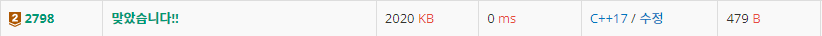

#INFO
난이도 : BRONZE2
문제 출처 : https://www.acmicpc.net/problem/2798
2798번: 블랙잭
첫째 줄에 카드의 개수 N(3 ≤ N ≤ 100)과 M(10 ≤ M ≤ 300,000)이 주어진다. 둘째 줄에는 카드에 쓰여 있는 수가 주어지며, 이 값은 100,000을 넘지 않는 양의 정수이다. 합이 M을 넘지 않는 카드 3장
www.acmicpc.net
#SOLVE
브루트포스로 풀이했다. 삼중 for문을 돌려서 모든 경우의 수를 탐색했는데, 시간 복잡도는 총 O(N^3)으로 N의 최댓값이 50이기에 문제의 조건인 1초 내에 모두 탐색이 가능하다.
#include <iostream>
#include <algorithm>
using namespace std;
int N;
int M;
int arr[100];
int main(){
cin >> N >> M;
for (int i = 0 ; i < N ; i++) {
int temp = 0;
cin >> temp;
arr[i] = temp;
}
int res = 0;
int sum = 0;
for (int i = 0 ; i < N ; i++) {
for (int j = i + 1 ; j < N ; j++) {
for (int k = j + 1 ; k < N ; k++) {
sum = arr[i] + arr[j] + arr[k];
if (sum <= M) {
res = max(res,sum);
}
}
}
}
cout << res << endl;
return 0;
}
마지막 작성 : 2021-11-21